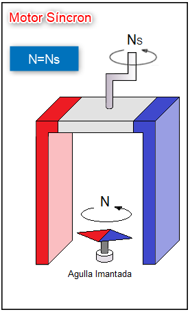
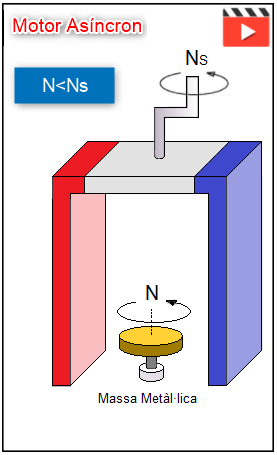
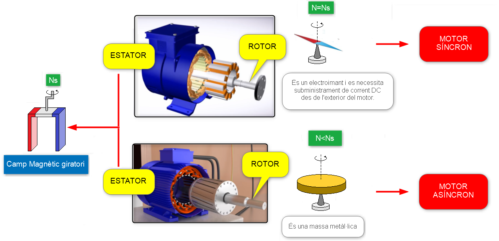

Principi de funcionament
Els motors trifàsics de corrent altern es classifiquen en: Motors SÍNCRONS i Motors ASÍNCRONS o d'INDUCCIÓ. Encara que en aquesta Unitat de Treball ens anem a centrar exclusivament en els motors d'inducció, que són els que majoritàriament s'utilitzen en els entorns industrials, és interessant veure quina és la diferència entre aquests dos tipus de motors.
Tots sabem que qualsevol motor elèctric té dos parts fonamentals: l'estator que és la part fixa i el rotor que és la part que gira i on es troba acoblat l'eix. Per explicar el funcionament d'aquests dos tipus de motors utilitzarem un imant accionat manualment per una maneta i simularem el comportament del rotor utilitzant una agulla imantada per al motor síncron i una peça metàl·lica per al motor asíncron (veure figura).
 
El funcionament d'aquest simulador de motors AC és el següent:
En accionar la maneta es produirà la rotació de l'imant (camp magnètic giratori) i observarem com també ho fan l'agulla imantada i la massa metàl·lica. A la velocitat de rotació de l'imant (Ns) se l'anomena velocitat de sincronisme i es mesura en r.p.m. Si poguérem mesurar la velocitat a la que giren l'agulla imantada i la peça metàl·lica observaríem la següent diferència:
- l'agulla imantada (rotor) gira a la mateixa velocitat que l'imant exterior (N=NS). Aquests tipus de motor reben el nom de MOTORS SÍNCRONS
- la massa metàl·lica (rotor) gira a una velocitat propera a la de l'imant exterior però sempre inferior (N<NS). Aquests tipus de motor reben el nom de MOTORS ASÍNCRONS

Ara la pregunta que ens podem fer és: com pot crear l'estator d'un motor trifàsic un camp magnètic giratori?
Licencia: licencia de software libre GPL